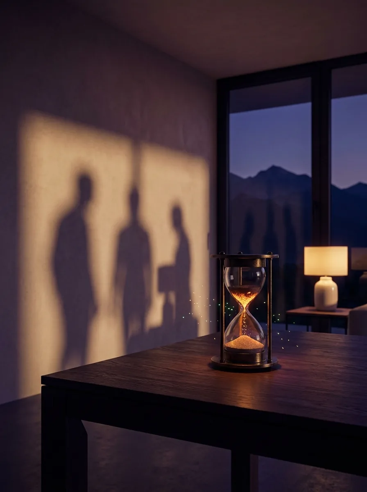

Етап 2 · Чудовището
Спирачката
Едно чудовище, три лица. Времето изтича, старите начини изморяват. На ритрийта го рисуваме, назоваваме и му излизаме насреща — заедно.

Вътрешният проблем
„Не спя. Не спирам. Не съм си на мястото.“
Сънят, дишането, вътрешният глас, който не млъква. Чудовището отвътре е най-тихото — и най-упоритото.
„За Съкровището, което най-много искаме, е добре да се изправим пред чудоВището, което най-много не искаме.“Писмо на Метатрон · книгата-сценарий
✦✦✦✦

Спирачката
Светът се мени по-бързо от усещанията ни — старите начини изморяват, а времето не стига.
Познахте ли чудовището си? Тогава пътят вече е започнал.
Пет дни · Банско или онлайн · отговаряме лично.